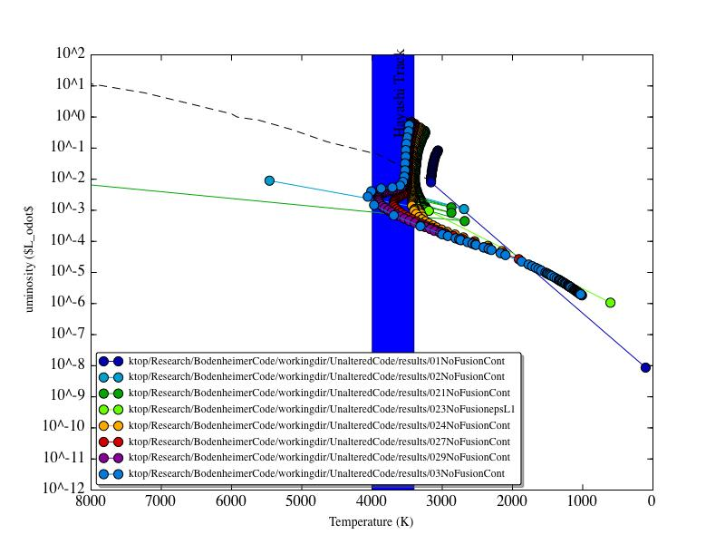
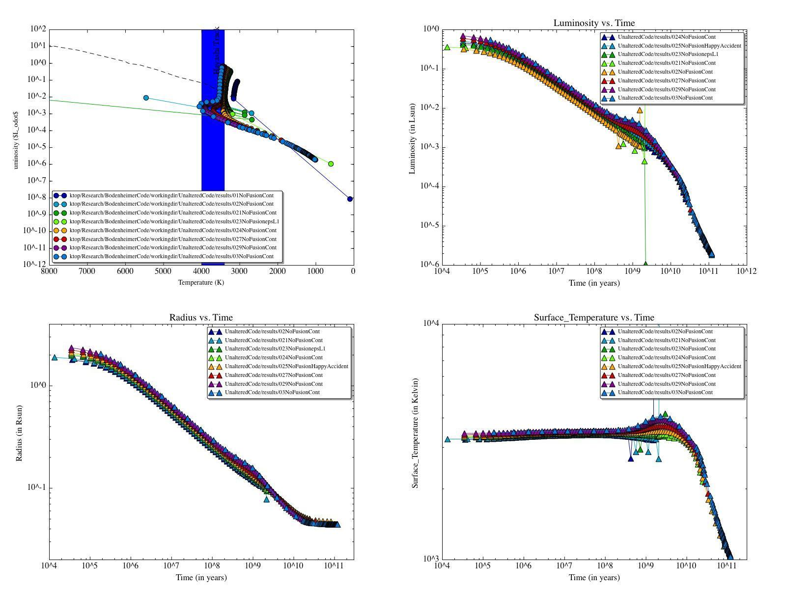
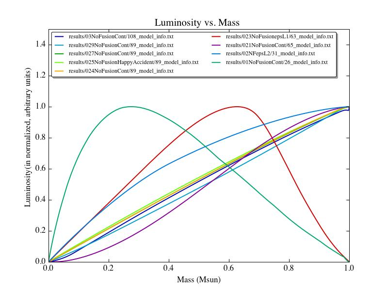
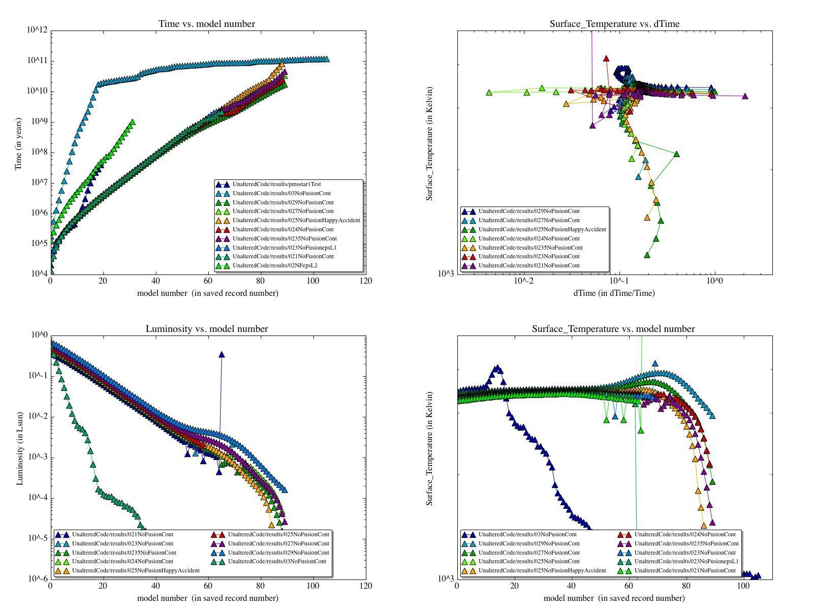

Date
& Time: April 23, 2012
Location:
Home
Computing
context: Macho Mac:
/Desktop/Research/BodenheimerCode/workingdir/UnalteredCode/
Scripts/Software
created today:
Useful
computer stuff figured out today:
Continuing
from last time:
Upload my group
meeting presentation and advisor meeting notes to the wordpress blog
Email the people I
want to be on my quals committee
The low-mass stellar
mass-radius relationship from last time:

Figure
0.1:
Low mass stellar
mass-radius relation taken from "Mass-radius relation of low
and very low-mass stars revisited with the VLTI" Authors:
Demory, B.-O.; Ségransan, D.; Forveille, T.; Queloz, D.; Beuzit,
J.-L.; Delfosse, X.; di Folco, E.; Kervella, P.; Le Bouquin, J.-B.;
Perrier, C.; Benisty, M.; Duvert, G.; Hofmann, K.-H.; Lopez, B.;
Petrov, R. Astronomy and Astrophysics, Volume 505, Issue 1, 2009,
pp.205-215
Link to the arXiv
article: http://arxiv.org/abs/0906.0602
Link to the ADS
entry: http://adsabs.harvard.edu/abs/2009A%26A...505..205D
It's
important to remind myself that the reason for figuring out what's
going on with this particular case is that I need to be confident
that once I feed TheCode.f a jupiter-mass and -luminosity input
model, it won't crash or go off the rails and produce a physically
un-possible result. To that end, I should also make sure to run a
0.1Msun model through TheCode.f in more detail and see what's been
causing that case to crash. Is it a luminosity lower-limit thing? Is
it something to do with TheCode.f not being able to successfully
invert a Henyey matrix containing a wide dynamic range of values?
This is the heart of what I need to figure out, here.
My
(Tentative) Guide to Getting These No Fusion Models To Converge In
Peter's Code:
1.
Converge one timestep with fusion to go from the polytropic input -->
more realistic profile.
2.
Run the result through 1 timestep of the code withOUT fusion -->
no-fusion profile. Make sure to turn Cwrk on, increase the limits on
SMAX lum, and set SMIN lum to 1(?).
3.
Run the result through as many timesteps of the NO fusion code as
possible. Make sure to decrease epsL (to prevent the model from
wandering into problematic regions of solution space). Also make sure
to raise the ITMX limit to compensate for the fact that the code is
going to have to search the soln space a lot more rigorously to find
a solution that satisfies these stricter requirements.
To
Do Today:
Run
the simulations on a range of masses between 0.3Msun and 0.2Msun.
Two reasons for doing this:
To
get a larger range of working test-case models that evolve forward
with no fusion onto the brown dwarf-like track
To
see where the upper and lower mass limits are on models that can
successfully evolve forward like that, so that I have a wider range
of test/comparison cases for my own code.
Find
a source/citation with the brown dwarf evolutionary track(s), and:
plot
those evolutionary tracks on my HR evolution diagrams
try
to extrapolate them up the HR diagram to the region of parameter
space occupied by these no-fusion models I've been running
...and
see how well the two do or don't match up, and if the latter, why.
Download
my own C++ code from the campus server
Create
the proper directory structure for that on this machine
Test
that my code will at least compile (and hopefully, also run) on
this machine
Look
into adding the atmospheric calculations that are in TheCode.f here
into my C++ code.
Upload/backup
my work to date to the campus servers.
Upload
my daily logs to the Wordpress server
Email
potential committee members about sitting on my qual
Find
three potential dates and times
Email
Greg to confirm he'll be in town during those times
Find
the email addresses for the rest of the people I'm asking
Email
them.
Fill
out the purchase order form
Go
on Amazon and get prices/quotes for the equipment I need:
Replacement
laptop battery
A
lock for the laptop
A
1-Terabyte external hard drive
Print
out the Amazon listings I find for the equipments and staple it to
the PO.
Run
the simulations on a range of masses between 0.3Msun and 0.2Msun.
Calculate
the masses, radii, and initial surface temperatures for systems of
the following masses:
0.29
Msun
Name
of this case: polytr029.inp, polyout029, 029FusionStart.start,
029FusionStart.txt, 029NoFusionCont.inp
Finished
all 900 timesteps
0.27
Msun
Name
of this case: polytr027.inp, polyout027, 027FusionStart.start,
027FusionStart.txt, 027NoFusionCont.inp
Note:
the no-fusion part of this run can't seem to converge in under 80
iterations, so I changed ITMX to 200 (from 80) in this .inp file
Arg,
even then, this case keeps stopping after 1 model. Can't figure
out why it won't converge. Will come back to this and try to
sort it out once the other 3 cases have stopped running.
Ended
up having to increase the polytropic input radius to 1.7e11 (from
1.1e11) cm to get the no-fusion portion of this run to work.
Finished
all 900 timesteps
0.23
Msun
Name
of this case: polytr023.inp, polyout023, 023FusionStart.start,
023FusionStart.txt, 023NoFusion.inp
Finished
696 timesteps before exiting with no discernible error code (???)
0.21
Msun
Name
of this case: polytr021.inp, polyout021, 021FusionStart.start,
021FusionStart.txt, 021NoFusion.inp
Finished
655 timesteps before exiting with no discernible error code (???)
Run
those polytropic models through a single timestep of TheCode.f WITH
fusion (using the .start file for the 025MsunFusion as a template
for their .start files).
Run
the results through many timesteps of TheCode.f WITHOUT fusion
(using the .inp file for 0.25MsunHACont as a template for their .inp
files)
Parse
and plot the results

Figure
1:
HR
diagram evolution for no-fusion evolution of 0.3, 0.29, 0.27, 0.25,
0.23, 0.21, and 0.2 Msun mass systems.
Repeat
the steps above at smaller mass intervals where appropriate
Near
the upper and lower mass boundaries where this sort of simulation
seems to work
Upper
mass limit: 0.3 Msun, at least, but likely higher. Maybe probe
the 0.5 to 0.3Msun mass range to see where the upper mass limit
truly is.
Lower
mass limit: somewhere between 0.25 and 0.23 Msun
I
wonder if decreasing the Crad values for the 0.23, 0.21, and
0.2Msun models might get them to converge farther along in time,
because the 'happy accident' that caused the 0.25Msun case to
evolve farther along was changing the Crad setting from 1.0 to
1e-10 in its .inp file.
May
also want to try lowering the epsL convergence parameter in the
.inp files for the 0.23 and 0.21Msun cases, to prevent those
fatal luminosity 'flips'
Might
also try setting the Rinit (for the polytr input) to larger
values for the 0.23 and 0.21 cases, since that ended up making a
big difference in the 0.27 Msun's no-fusion convergence behavior.
Perhaps
at greater mass resolution throughout, depending on what the
initial results reveal
Might
also want to try to get the 0.3, 0.29, and 0.27 Msun systems (which
all completed the 900 timesteps they were given in their .inp files)
to evolve even farther along in time, and see how far along they can
get.
In light of the ideas
above, here are some additional runs:
Based on the results
in Figure 2 (above), I want to re-run the 0.23 Msun no-fusion system
with Crad again set to 1e-20, but with the epsL parameter also
decreased to, say 5e-5, to try to keep the models out of those
less-than-physical regions of solution space.
I suspect that the
0.23Msun no-fusion case might converge/evolve better if I also
restricted how much the luminosity was allowed to change on any given
iteration. Might also be worth trying this again, but with epsL set
to 1e-5, rather than 5e-5.
For now, though, I'm
going to run a 0.24Msun no-fusion case, and see whether or not it
converges.
A summary of the
no-fusion, low-mass evolution results so far:

Figure
3:
A summary of the
no-fusion evolution results so far for system masses between 0.1 and
0.3 Msun. The lower mass boundary for successful convergence is
somewhere between 0.24 and 0.23 Msun.

Figure
4:
A summary of the
internal luminosity profiles of all the final converged models in
the 0.3 through 0.1 Msun no-fusion runs so far. The x-axis should
be labelled 'mass fraction' instead of 'Msun.' Note that the
y-scale is, essentially, 'luminosity fraction', and not absolute
luminosity for all these models. The point of this figure is to
compare/contrast the shape of the luminosity profiles of successful
vs. unsuccessful models at the ends of their runs.
Looking at Figures 3
and 4, you have to wonder: what's causing everything 0.23Msun and
under to fail to converge at later times, to exhibit that 'flippy'
luminosity behavior, to not follow the slight rise and then large,
continuous fall in surface temperature, radius (well, the slope of
the outer radius w/ time, anyway), and luminosity? What's the
physical difference that prevents all of that stuff from happening
once you reach ~0.23 Msun? Why is the boundary *there*? Also,
where's the upper mass boundary, and what's the physical effect that
sets *it*?
From watching the
runs' progress (w/ my "follow" program), it looks to me
like there's always a point between the 500th and 600th timesteps
where the dTime values, which had been steadily increasing until
then, suddenly have to decrease by an order of magnitude in order for
the simulation to continue. Once the simulation is past that
critical point or bottleneck or whatever it is, then the run proceeds
smoothly and the dTime values resume their steady increase.
In light of that
behavior that I've seen crop up in the 0.24, 0.27, and 0.235 Msun
systems (can't remember if I saw it in the 0.29 and 0.25 Msun runs or
not), I should see how dTime varies with time in these runs, and see
also how the surface temperature, luminosity, pressure, and radius
depend on these dTime values. It may be that the lower-mass systems
that haven't managed to converge beyond ~600 timesteps may be getting
thrown off the rails at the same point due to limits on how may dTime
decreases are currently allowed w/in the design of TheCode.f before
the program just gives up and says "STOP: convergence not
possible."
Let's see if Figure 5
(below) backs up my hunch.

Figure
5:
A comparison of
successfully vs. unsuccessfully evolved/converged low-mass no-fusion
systems, ranging between 0.3 and 0.1 Msun. The marginally stable
case seems to be around 0.235Msun.
From looking at the
results in Figure 5, it looks to me like the size of the timestep is
not the primary problem. Rather, it's one of two other things:
1. The rate at which
the timestep size can change, and/or
2. The epsL
convergence constraint needs to be tighter for systems less massive
than ~0.27Msun (to prevent the 'jittering' or 'flips' in the surface
temperature and/or internal luminosity profiles).
I'm going to try to
modify TheCode.f to attempt to get convergence by reducing the dTime
value more than just three times before declaring the model
'impossible to converge.' Start with this next time.
Next steps:
Try to modify
TheCode.f to attempt to get convergence by reducing the dTime value
more than just three times before declaring the model 'impossible to
converge.'
Upload today and the
19th's logs to the wordpress blog.
Write a little shell
script (or python script?) to do the scp backups from this machine
to the campus servers automatically
And then really,
really: back up the contents of this machine to the campus server.